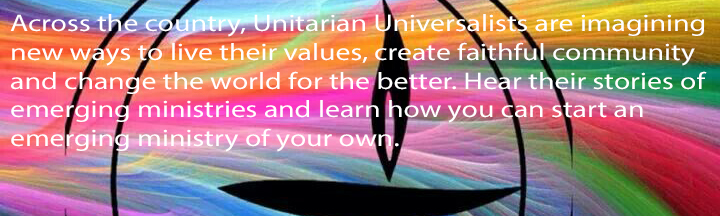

-

UU Congregations of Louisville
First Unitarian Church
Welcome, welcome, welcome!!! Whether you come to visit once or stay for a lifetime of religious growth and fellowship, First Unitarian Church of Louisville may have a place for you. Ours is a liberal, locally governed congregation in association with the churches of the Unitarian Universalist Association. Sunday worship is a comprised of sharing, readings, musical selections, hymns, and other elements selected for their harmony, inspirational value, beauty, and dignity.
After the Celebration of Life service we invite you to join us for fellowship and refreshments. For more information about the church, we have a visitor's table just inside of the social hall. A member of our Board of Trustees will be waiting to answer your questions and collect the lavendar visitor's card from you. Also in the social hall there are various kiosks with informational bulletin boards containing literature and events pertaining to the various affiliate groups and committees. You will find more literature about Unitarian Universalism in our literature rack. Someone from our Shared Ministry Committee will greet you and answer your questions on Sunday mornings.
We believe religion is not to be given to a person, but something to be nurtured and encouraged as a person's life unfolds. At First Unitarian Church, our religious exploration programs for all ages are based on five themes: Unitarian Universalist Identity, Jewish and Christian Heritage, Other World Religions, Social Justice and Action, and Life Issues.
The short answer is, you become a member simply by signing the membership book, in the presence of the minister or a board member. First Unitarian is a free church; no assent to a creed or formula of faith is required.
How do I become a Member?
The long answer is, we want you to join as a member only when you are ready to make a commitment to this congregation, and to Unitarian Universalism. Attend several services; learn about Unitarian Universalism by participating in the UU Roots program; make an appointment to meet with the Minister, the Shared Ministry Coordinator, and/or the Director of Religious Education. We expect that our members will be active participants in the life of the congregation, who contribute their presence, time, skills, and money.
Why on earth would you want to do all that? You do it because you know that here, you have found your religious home. You do it because you want to be a part of this covenanted community. You do it because you recognize that being a member of this congregation will enrich your life, and the lives of children and future generations.
Clifton Universalist Unitarian Church
Clifton Universalist Unitarian Church holds our services each Sunday morning from precisely 11:00ish to 12:00ish, immediately followed by fellowship during our Social Hour (which is typically more of a Social Two Hours by the time everyone wants to leave).
Our Services include a time for sharing Joys and Concerns, music, readings, meditative silence, children’s stories, and thought-provoking sermons.
Our Liberal Religion
Unitarian Universalism has evolved over the centuries, having had its roots based on concepts that date back to early Christianity. But unlike many traditional religions that define themselves by professions of faith, UU’s have no such creed. Thus, each Sunday our sanctuary is filled with those who have Buddhist, Humanist, Christian, Taoist, Pagan, and Atheist leanings, and some with no leanings at all. That is not to say there is no light upon the path in our Liberal Religion. Our guideposts along the road are our Seven Principles:
The inherent worth and dignity of every person;
Justice, equity and compassion in human relations;
Acceptance of one another and encouragement to spiritual growth in our congregations;
A free and responsible search for truth and meaning;
The right of conscience and the use of the democratic process within our congregations and in society at large;
The goal of world community with peace, liberty, and justice for all;
Respect for the interdependent web of all existence of which we are a part.
Every Unitarian Universalist congregation affirms and promotes these principles. The word religion literally means “to reconnect,” which is why it shares the same root as the word ligament. So our religion is about making connections with others, not separating ourselves from them.
What We Mean by Worship
The root of the word “worship” is “to give worth.” Our services are about lifting up, giving worth and meaning to those around us. Our progressive, liberal religious community has a diverse membership that welcomes you, your background, beliefs, and lifestyle. Ours is a Living Tradition influenced by those who shape the congregation. We may not share the same ideas, but we do share a common way of relating to others and our world that includes justice, compassion, kindness, and respect. It is in this spirit of openheartedness and open-mindedness that we eagerly open our doors to you.
Please come and join us anytime!Thomas Jefferson Unitarian Church
Searching for Truth Through Reason, Love, and Diversity
The mission of Thomas Jefferson Unitarian church is to make a difference in the world by creating a community of celebration, sharing and support, where we explore questions of belief, spirit and values, and where we welcome all who seek the paths of truth and who honor freedom with responsibility.
Our Church Convenant
Together, we have chosen to make a church, a community to encourage the best in us, where children and adults may come together in celebration and sharing.
Together, we have chosen to make a church, a community where we support each other in tolerance and love as we explore questions of belief, spirit and value, and discover what unites us in service and concern.
Together, we have chosen to make a church, a community made strong by a living tradition which unites our past with our future in a vision shared with all who seek the paths of truth and honor freedom with responsibility.
Together, we have chosen to make a church, so that in community we may become what we cannot be when we are isolated and alone.
Together, we have chosen to make a church, so that we can make a difference in the world.
– Adopted by the congregation May, 1989We are a Welcoming Congregation in which people who are bisexual, gay, lesbian, and/or transgender will know they are appreciated and affirmed.
Thomas Jefferson Unitarian Church is a Welcoming Congregation
The Welcoming Congregation Program is a volunteer program for Unitarian Universalist congregations that want to take intentional steps to become more welcoming and inclusive of people with marginalized sexual orientations and gender identities. First launched in 1990, the program grew out of an understanding that widespread prejudices and ignorance about lesbian, gay, bisexual, transgender, and queer (LGBTQ) people existed within Unitarian Universalism, which resulted in the exclusion of LGBTQ people from our congregations. Today, 66% of U.S. Unitarian Universalist (UU) congregations and 94% of Canadian UU congregations are recognized as Welcoming Congregations. The program is supported by LGBTQ Ministries.
Thomas Jefferson Unitarian Church is a supporting member of KFTC
Thomas Jefferson Unitarian Church is a supporting member of KFTC
We are Kentuckians. We believe that today we have our best chance in decades to build New Power in Kentucky. New Power means thousands of new jobs, healthy communities and opportunities for our children.
But we have to address the problems caused by Old Power – old political power, old economic power and old energy power. We have to:
- Address the problems caused by coal mining and its effects on our water, air, land and people.
- Make a transition to cleaner and safer forms of energy that create new jobs and respect our resources.
- Reform our tax structure so it’s fair and supports quality schools, healthy and safe communities, and an effective state government.
- Restore voting rights and enable all Kentuckians to participate in our democracy.
- Choose better leaders who represent ordinary people instead of powerful interests.
First
Unitarian ChurchClifton Universalist Unitarian Church
Thomas Jefferson Unitarian Church


© 2015 uulouisville.org volunteers
paid for by the abundance of the Universe